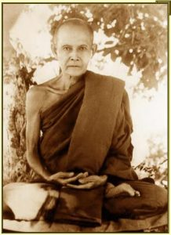

Аджан Ман (1870-1949)

Аджан Ман Буридатта (1870-1949) — тайский монах, основавший вместе с Аджаном Сао Кхантасилой тайскую лесную традицию, которая впоследствии распространилась по всему Тайланду и ряду других стран.
Аджан Ман родился в четверг 20 января 1870 года в лаосско-говорящей семье, в деревне Бан Кхам Бон на западном берегу реки Меконг, что находится в нынешней провинции Убон Ратчатани на северо-востоке Тайланда. Он был старшим из девяти детей — восьми мальчиков и одной девочки.
Был посвящён в саманеры в возрасте 16 лет в ближайшем к деревне монастыре. Изучал буддийские писания, историю и народные легенды на хрупких пальмовых листьях, сохраннённых в монастырской библиотеке. Он оставался саманерой два года, до 1888, а затем оставил монастырь по требованию отца.
Полное монашеское посвящение он получил 12 июня 1893 в возрасте 22 лет в монастыре Ват Лиап города Убона провинции Ратчатани. Его наставником стал достопочтенный Пхра Арьякави. Ему дали монашеское имя Буридатта («благословленный мудростью»). После посвящения он отправился практиковать медитацию с Аджаном Сао, и обучился практике медитации лаосской традиции. Аджан Сао учил его успокаивать ум и мысленно повторять слово «буддхо». Они вместе часто отправлялись в дремучие леса побережья Меконга практиковать медитацию. На тайском это называется «тудонг», от слова «dhutanga», которое подразумевает ряд специальных аскетических практик.
В 1899 Аджан Ман перестригся в Дхаммают никаю, реформированное направление, подразумевающее более строгое изучение Винаи и текстов. Практиковав несколько лет под руководством учителя, Аджан Ман, с разрешения наставника, отправляется на собственные поиски других мастеров медитации. В течение последующих нескольких лет он скитался по Лаосу, Тайланду и Бирме, оставаясь в уединении в лесах и практикуя медитацию. В 1905 вместе с Аджаном Сао они отправляются в Лаос к Святыне Пра Тат Пханом. Последующие несколько лет Аджан Ман продолжает скитаться в одиночестве, практикуя в диких лесах, пещерах и разных опасных местах.
В 1911 он идёт пешком в Бирму в поисках реализованного учителя, который мог бы помочь ему в борьбе за просветление. Постепенно он дошел до Бангкока, а потом отправился на запад через горы. В Бирме ему удалось найти ряд выдающихся учителей, и он провел сезон дождей в Мулмейне, восхищённый сильной монашеской дисциплиной бирманцев.
Сезон дождей 1912 года Аджан Ман проводит в Ват Са Патум (сейчас — Ват Патум Ванарам) в Бангкоке, где получает советы и наставления от Его Святейшества Пра Упали из Ват Боромнивасин. После сезона дождей он отправляется в район города Лопбури, где практикует интенсивную медитацию в пещерах.
В 1913 он остаётся в пещере Сарика у Великой Горы (Кхао Йаи) в Након Найок. В этот период в возрасте 43 лет, согласно его биографии, записанной его учеником Луан Та Маха Буа, он достигает уровня анагамина («не-возвращающегося») и проводит ещё пару лет в этом гористом районе. В эти годы он боролся со смертельной болезнью. В той пещере ныне стоит святыня, построенная в честь Аджана Мана, которая сегодня является основным местом паломничества в этом районе.
В 1915 Аджан Ман проводит сезон дождей в Ват Сапатум в Бангкоке и часто ходит слушать проповеди Аджана Джана, известного монаха. В последующие годы он отправляется в северные районы Тайланда, где скитается несколько лет. В эти годы он получает широкое признание как крайне одарённый учитель, и число его последователей растёт как среди мирян, так среди монахов. В 1926 он совершает «тудонг» вместе с группой из 70 монахов в район Утхена.
В это время начинаются осложнения с монашескими властями, которые проводят реформу по централизации и стандартизации Сангхи и требуют от всех скитающихся монахов прикрепиться к определённому монастырю и стать продуктивными членами общества. Поскольку скитающиеся и проводящие длительное время в джунглях монахи не находятся под присмотром, то, как говорили власти, они могут вызывать ряд сомнений и подозрений. Аджан Джан призывает людей отказаться помогать скитающимся монахам. Некоторые из учеников Аджана Мана задерживаются властями с обвинением за бродяжничество. Аджана Мана сильно беспокоит такая тенденция, угрожающая традиционным монашеским обычаям, и он подумывает над тем, чтобы начать поиски для проживания в совсем удалённых регионах, до которых не могут добраться Бангкокские власти.
В 1927 он обучает монахов и мирян в Ват Сутат, Ват Лиап и Ват Бурапа. Оказав необходимую поддержку пожилой матери, он отправляется в центральный регион Тайланда без определенной выбранной цели, путешествуя по безлюдным и населённым местам, ночуя под деревьями, получая еду от простых фермеров, встречающихся по пути. Он останавливается в великолепных диких местах между провинциями Сара Бури и Наком Рачасима.
В последующий год Аджан Ман проводит сезон дождей в Ват Бурфа в Убоне. После этого он покидает северо-восточный Тайланд и не возвращается сюда до последних лет своей жизни. Вначале он отправляется в Бангкок, затем в Чанг Май и Чанг Рай, где остаётся в медитационном затворничестве на последующие 12 лет своей жизни. В течение 1929 он назначается настоятелем Ват Чеди в Чанг Мае, однако, когда умирает его наставник Пхра Упали, Аджан Ман покидает монастырь, не поставив в известность ни монахов, ни власти в Бангкоке. Последующие годы он проводит в медитационных затворничествах на склоне горы Чиан Дао и часто медитирует в священных пещерах этой горы. В Ват Чеди он вновь возвращается лишь в 1933 и оттуда совершает путешествие в Бирму через районы Карен и Шан.
С 1932-1938 он практикует уединённую медитацию в лесах и горах, лишь изредко контактируя с людьми. Эти годы уединённой практики в глухой недоступной местности очень значимы, согласно его биографии. По словам его учеников в этот период он достигает архатства во время затворничества в горах, народности которых известны за свои уникальные шаманские традиции Тайланда.
В 1940 Аджан Ман отправляется на родину в Исан на северо-восток Тайланда по настоятельным просьбам его главных учеников. Вернувшись, он остаётся в монастыре Ватт Богисампон, настоятелем которого являлся его ученик, Аджан Чао Кхун Дхаммачеди. Оттуда он уходит на сезон дождей в Ват Нон Нивет, а после скитается по сельской местности деревни Ван Нон Нам Кем. Даже в возрасте 70 лет он всё ещё был способен позаботиться о себе в условиях дикой природы. Последующие пару лет он также ходит по разным монастырям.
Когда ему исполняется 75, он решает остаться в своём убежище Пеу Понд, что находится глубоко в лесах у подножья горы Пху Пхан, рядом с Сакон Наконом. Из-за слабого здоровья он более не может скитаться по лесам. В 1948 Аджан Ман умирает в монастыре Ват Суддаваса провинции Сакон Након.
Его практика была принципиально строгой и уединённой. Он преданно следовал Винае (монашеской дисциплине) и практиковал 13 аскетических практик, известных как «дхутанга» — например, ношение одежд из обносков, проживание в лесу и питание один раз в день. В поисках уединённых мест дикой природы Тайланда и Лаоса он избежал ответственностей оседлой монашеской жизни и проводил длительные часы дня и ночи в медитации. Несмотря на его затворническую природу, Аджан Ман привлёк огромное число учеников и последователей, не боящихся трудностей лесной жизни.